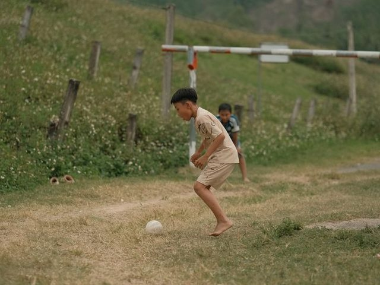
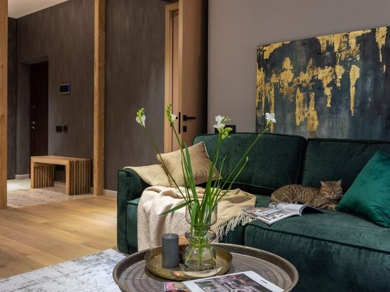
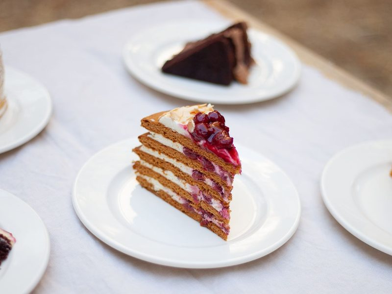
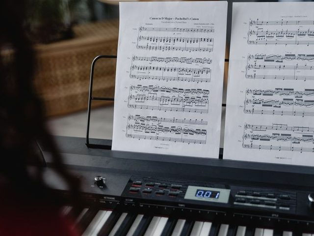
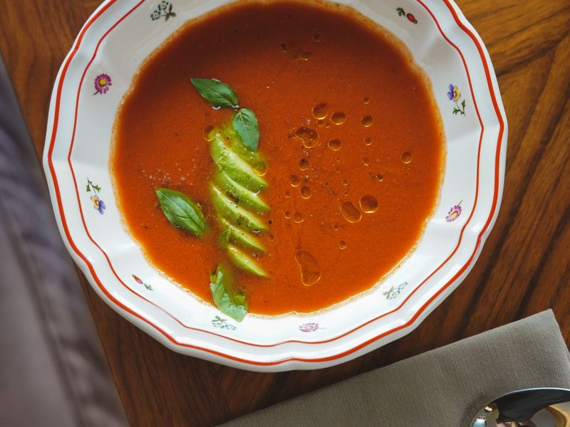

VOCABULARY · WORD UP 單字複習 UNIT 44
S-IV．S 開頭（四）
WORD UP「S-IV」的 44 個字（snack 到 spell）。紅色＝要複習，藍色標籤＝WORD UP 標熟記、還要在這裡考對。
共 44 個單字．點 🔊 聽發音
1snackn.
點心；零食
I have a snack after school.我放學後吃點心。

2snailn.
蝸牛
The snail moves very slowly.蝸牛移動得很慢。
3snaken.
蛇
I'm afraid of snakes.我怕蛇。
4sneakern.
運動鞋
常用複數 sneakers
I need new sneakers for PE class.我體育課需要新球鞋。

5sneakyadj.
鬼鬼祟祟的；狡猾的
The fox is sneaky.狐狸很狡猾。

6snown./v.
雪；下雪
It snows a lot in Japan.日本常下雪。
7snowyadj.
下雪的
It was a snowy day.那是下雪的一天。
8soadv./conj.
如此；所以
It was raining, so we stayed home.在下雨，所以我們待在家。

9soapn.
肥皂
Wash your hands with soap.用肥皂洗手。

10soccern.
足球
play soccer
They play soccer after school.他們放學後踢足球。
11socialadj.
社會的；社交的
social media 社群媒體
She spends too much time on social media.她花太多時間在社群媒體上。

12societyn.
社會
We live in a modern society.我們生活在現代社會。
13socksn.
襪子
複數；a pair of socks
I bought three pairs of socks.我買了三雙襪子。

14sodan.
汽水
Don't drink too much soda.不要喝太多汽水。

15sofan.
沙發
The cat is sleeping on the sofa.貓在沙發上睡覺。
16softadj.
柔軟的；輕柔的
hard 硬的
This pillow is soft.這個枕頭很軟。
17soldiern.
士兵
The soldiers are marching.士兵們在行軍。
18solutionn.
解決辦法；答案
We need a solution to this problem.我們需要解決這個問題的辦法。
19solvev.
解決
Can you solve this math problem?你能解這題數學嗎？

20someadj./pron.
一些
用在肯定句
I want some water.我想要一些水。
21sometimesadv.
有時候
I sometimes walk to school.我有時候走路上學。
22somewhereadv.
某處
I left my keys somewhere.我把鑰匙放在某個地方了。
23sonn.
兒子
daughter 女兒
They have one son and two daughters.他們有一個兒子和兩個女兒。

24songn.
歌曲
This is my favorite song.這是我最喜歡的歌。
25soonadv.
很快；不久
as soon as 一…就…
See you soon!待會見！
26soreadj.
疼痛的
sore throat 喉嚨痛
I have a sore throat.我喉嚨痛。
27sorryadj.
抱歉的；難過的
I'm sorry to hear that.
I'm sorry I'm late.對不起我遲到了。
28sortn./v.
種類；分類
sort out 整理
Sort the cards by color.把卡片依顏色分類。
29souln.
靈魂
Music is food for the soul.音樂是靈魂的食糧。
30soundn./v.
聲音；聽起來
sound + 形容詞
That sounds great!聽起來很棒！

31soupn.
湯
Would you like some soup?你要喝點湯嗎？

32souradj.
酸的
Lemons are sour.檸檬是酸的。
33sourcen.
來源
Fish is a good source of protein.魚是很好的蛋白質來源。
34southn./adj.
南方；南方的
Kenting is in the south of Taiwan.墾丁在台灣南部。
35southernadj.
南方的；南部的
It is warm in southern Taiwan.台灣南部很溫暖。

36soy saucen.
醬油
Add some soy sauce to the noodles.在麵裡加些醬油。

37spacen.
空間；太空
in space 在太空
Astronauts live in space for months.太空人在太空住好幾個月。
38spaghettin.
義大利麵
h 不發音
I'd like spaghetti for dinner.我晚餐想吃義大利麵。
39speakv.
說（語言）
三態 speak-spoke-spoken
Can you speak English?你會說英文嗎？

40speakern.
說話者；喇叭
Turn up the speaker.把喇叭開大聲一點。
41specialadj.
特別的
Today is a special day.今天是特別的日子。

42speechn.
演講
give a speech
She gave a speech in English.她用英文演講。
43speedn.
速度
speed limit 速限
Slow down! You're over the speed limit.慢一點！你超速了。

44spellv.
拼字
How do you spell your name?你的名字怎麼拼？
FOCUS
重點整理
| 說法 | 中文 | 例子 |
|---|---|---|
| sound / smell / taste + 形容詞 | 聽起來 ／ 聞起來 ／ 嚐起來 | That sounds fun. |
| solve / solution | 解決（動詞）／ 解決辦法（名詞） | solve the problem ／ a good solution |
| some / any | 肯定句 ／ 否定句、問句 | some milk ／ any milk? |
| as soon as | 一…就… | Call me as soon as you arrive. |
| give a speech | 演講 | give a speech at school |
| south / southern | 南方 ／ 南部的 | southern Taiwan |
| sometimes | 有時候（頻率） | I sometimes cook. |
socks、sneakers、slippers 常用複數：a pair of socks。